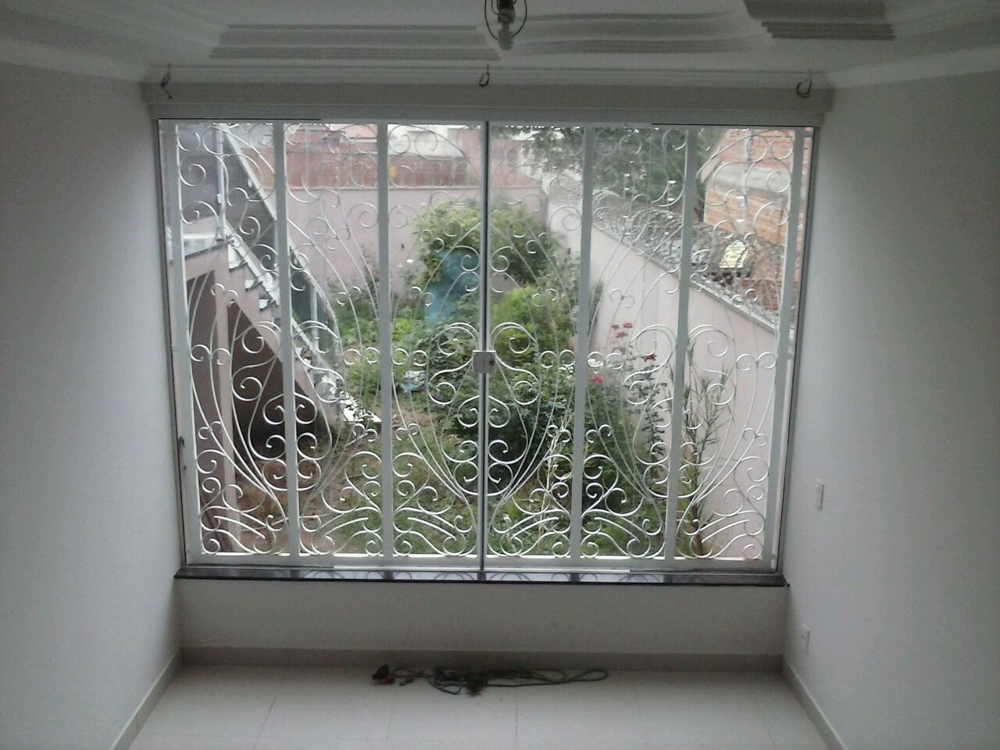
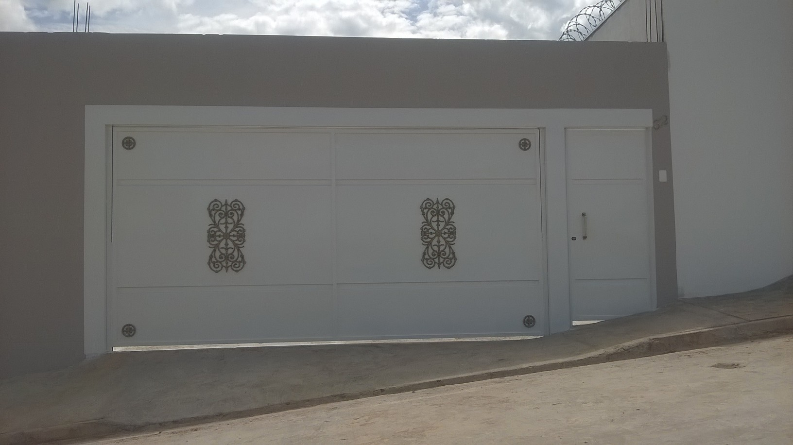
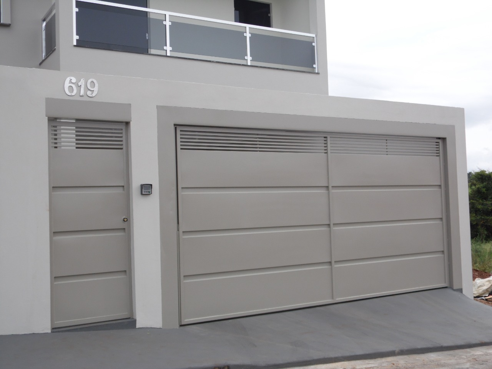
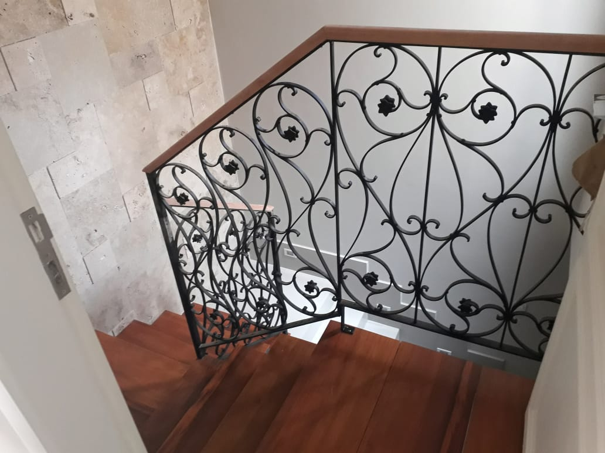
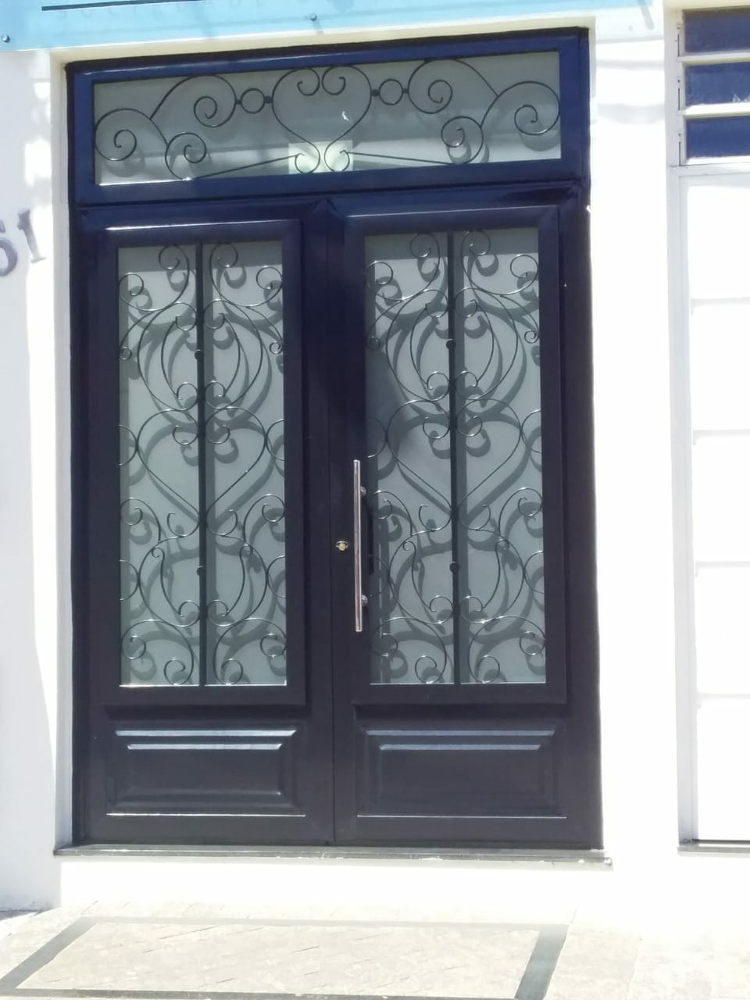
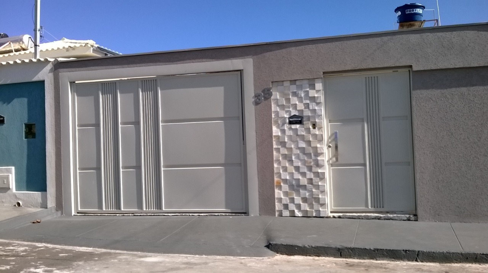
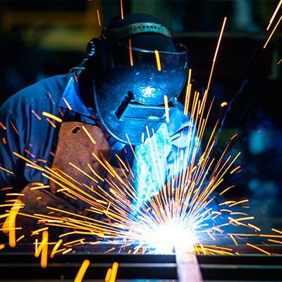
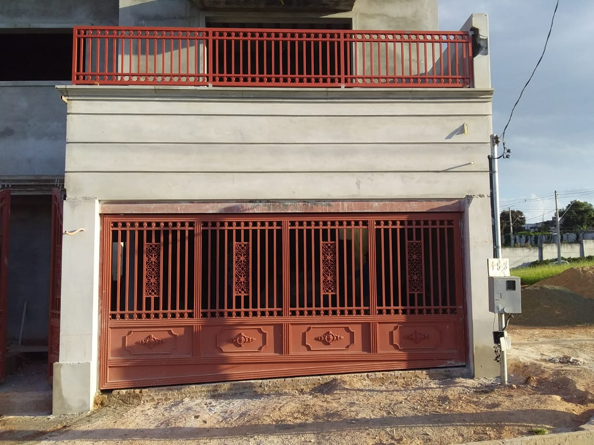
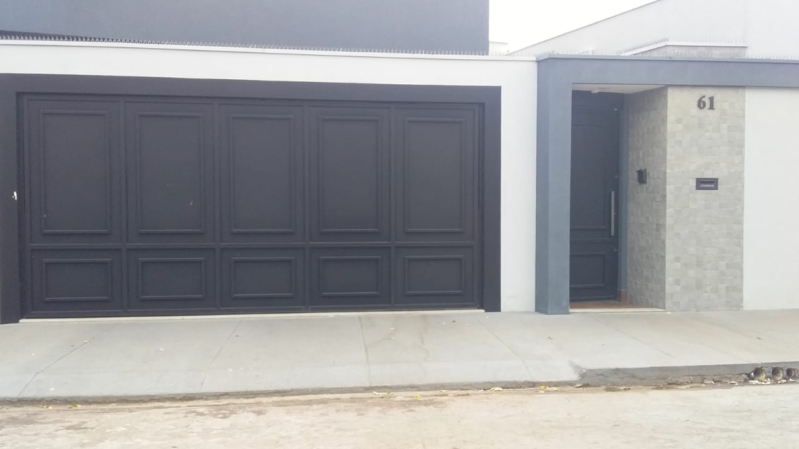

Grades e segurança
Proteção sem deixar de lado estética e acabamento.

Há mais de 30 anos, transformamos necessidades em soluções bem executadas para residências, empresas e projetos.
Desde 1992 Passos/MG Soluções sob medida Pós-venda
Cada projeto começa com uma necessidade. Nosso trabalho é entender o que o cliente precisa, avaliar as possibilidades e encontrar a solução mais adequada para cada situação. Da fabricação à instalação, buscamos entregar qualidade, segurança, funcionalidade e acabamento.
Nossa missão é atender a necessidade de cada cliente com excelência.
Mais de três décadas de experiência em serralheria, fabricação e soluções sob medida.
Cuidamos do projeto, dos materiais, da fabricação, do acabamento e da instalação.
Cada espaço e cada necessidade são diferentes. Por isso, avaliamos cada projeto individualmente.
Nosso objetivo não é simplesmente entregar um produto. É resolver a necessidade do cliente.
Valorizamos o contato direto e transparente durante todo o processo.
Nosso relacionamento não termina quando o serviço é concluído.
Nossa experiência permite atuar em diferentes tipos de projetos, desde necessidades residenciais até demandas comerciais, industriais e projetos especiais.

Proteção sem deixar de lado estética e acabamento.

Soluções para todo tipo de imóvel, residenciais, comerciais e industriais.

Projetos pensados para aproveitar espaços e atender às necessidades da obra.

Quando a solução precisa ser desenvolvida especificamente para o espaço ou projeto.

Mais praticidade e segurança para acessos e portões.

Recuperação, ajustes e adequações para prolongar a vida útil das estruturas.

Necessidades que não cabem em uma categoria também podem ser avaliadas pela nossa equipe.
Não encontrou exatamente o que procura?
Converse conosco. Podemos avaliar sua necessidade e encontrar uma solução.
Ao longo de nossa história, participamos de projetos de diferentes tamanhos e características. Alguns deles estão aqui.

Trabalhamos em parceria com arquitetos, engenheiros, construtores e outros profissionais para transformar projetos em soluções executáveis. Nossa experiência pode contribuir desde a avaliação da solução até a fabricação e instalação.
Quando necessário, avaliamos medidas, materiais, características do local e possibilidades de execução para encontrar a melhor solução para cada projeto.
Você traz o projeto. Nós ajudamos a transformar a ideia em realidade.
A Serralheria Amaral nasceu em 1992.
Desde então, muita coisa mudou: materiais, tecnologias, equipamentos, projetos e formas de trabalhar. O que não mudou foi o compromisso com aquilo que realmente importa: entender a necessidade do cliente e entregar um trabalho que faça sentido para ele.
É assim que construímos nossa reputação. E é assim que continuamos evoluindo.
Serviço de alta qualidade. Profissionais capacitados e compromissados. Cumprem o prazo. Preço justo. Sempre disponíveis e prestativos. Recomendo.
Angelo Garcia Lima
Passos/MG
Atendimento muito bom, super atenciosos. Os produtos também de qualidade. Super indico, já fizemos muitos pedidos com eles.
Tati Sanchez
Passos/MG
Trabalho de ótima qualidade. Preço justo, pontualidade do início ao término do serviço. É uma equipe com excelentes profissionais. Eu e meu esposo tivemos atendimento de primeira.
Maria Isabel da Silva Viana
Passos/MG
Excelentes profissionais, cumprem com o prazo prometido, acabamento primeira linha.
Lucas Chagas
Passos/MG
Tecnologia, equipamentos e processos mudam. As necessidades dos clientes também. Por isso, estamos sempre evoluindo.
Mas alguns princípios permanecem: compromisso, transparência, qualidade e responsabilidade pelo que entregamos.
Conte o que você precisa. Pode ser um projeto, uma reforma, uma estrutura, um portão ou uma necessidade que ainda não sabe exatamente como resolver. Nossa equipe está pronta para entender a situação e orientar você sobre as possibilidades.